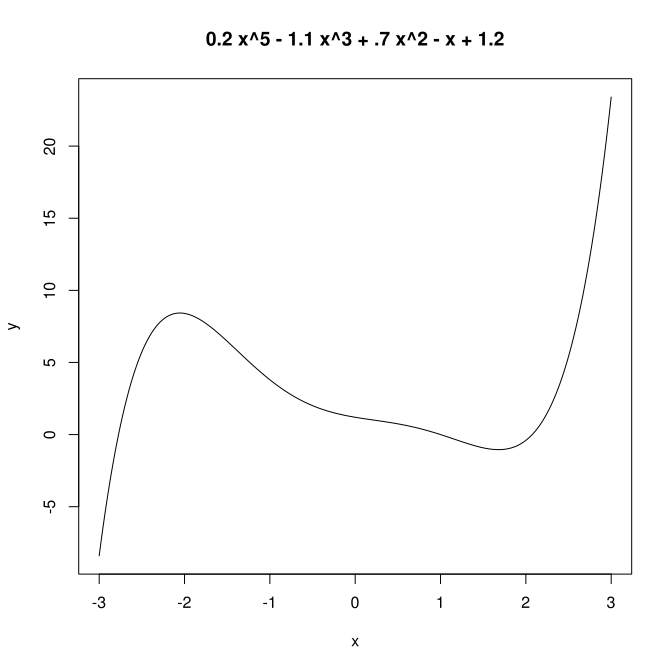

Dans ce TP, on aborde un ingrédient essentiel pour le perceptron et plus généralement, dans tous les réseaux de neurones et même bien au-delà, la descente de gradient stochastique. C'est un algorithme qui détermine un minimum d'une fonction. Nous allons en manipuler une version très simple.
On suppose que l'on minimise une fonction d'une seule variable, soit f(x), x pouvant prendre sa valeur dans un certain intervalle [xmin, xmax]. On suppose que f est dérivable sur cet intervalle et on note f' sa dérivée.
Remarque : cette algorithme trouve un minimum local de f.
Supposons que l'on veuille trouver un minimum d'une fonction f à valeur réelle. Comme on l'a vu en cours, le principe de cette méthode est :
Écrire un script python qui réalise une descente de gradient stochastique.
On s'exercera sur la fonction f(x) = 0,3x2 - 2x + 4 avec x ∈ [-10, 10].
On définira une fonction (python) f (x) qui renvoie la valeur de la fonction (mathématique) f en x :
def f (x):
return (0.3 * x * x - 2 * x + 4)
De même, vous définirez une fonction (python) df (x) qui renvoie la valeur de la dérivée de f en x. (Je vous laisse calculer la dérivée de f.)
Une fois que votre programme fonctionne, vous l'utiliserez pour trouver un minimum pour la fonction f (x) = 0,2 x5 - 1,1 x3 + 0,7 x2 - x + 1,2.
Comme on l'a dit, l'algorithme de descente de gradient stochastique trouve un minimum local. Recherchez un minimum local pour différentes valeurs de x0 ∈ [-2, 3] (par exemple, vous prenez x0 = -2, puis -1, puis 0, puis 1, puis 2, puis 3) ; pour chaque valeur de x0, affichez le minimum trouvé. Que constatez-vous ?
Pour votre information, j'affiche le graphe de cette fonction :

Ce graphe est-il cohérent avec les minima que vous avez trouvés ?
De la même manière, vous chercherez les minima de la fonction : g(x) = (x+4)(x+2)(x+1)(x-1)(x-3)(x-0,5)(x+1,5)/20 pour x ∈ [-3, 3[. Votre programme doit afficher les abscisses des minima.
Pour finir, vous m'envoyez votre/vos script(s) par email, en mettant votre binôme en cc.